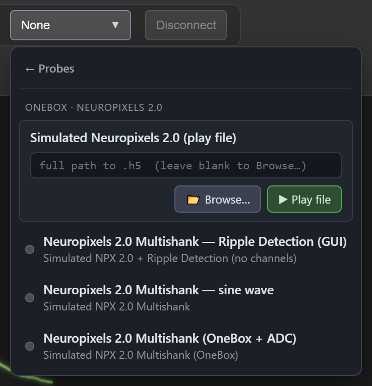
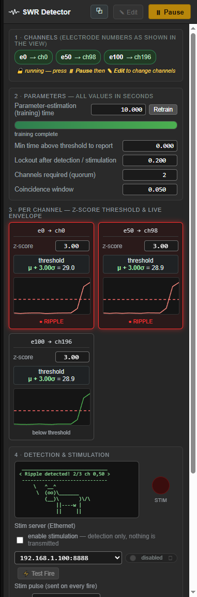
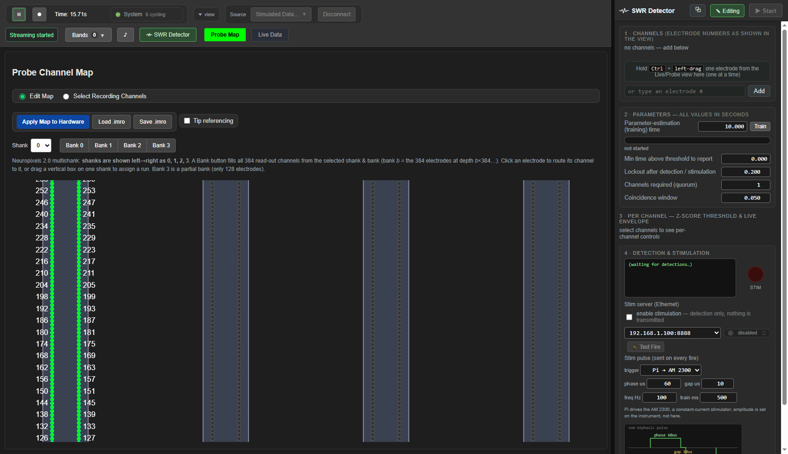
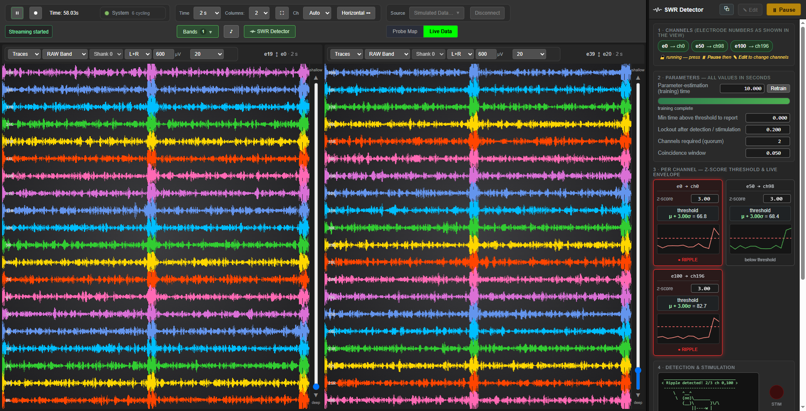

SpikesPeak — Simulated Data (complete operating guide)#
SpikesPeak can stream hardware-free simulated data through the exact same pipeline as a real probe — display, probe-map editor, recording, channel selection, and ripple detection all work with no probe attached. Use it to learn the UI, develop, demo, or validate the ripple detector. This guide covers every simulated source and every way to drive it (GUI clicks and the command-line/WebSocket interface).
See also:
GUI-Guide.md(toolbar + views),RippleDetection.md(the ripple module),../developer_docs/SyntheticSources.md(the C++/.h5internals),../developer_docs/ControlCLI.md(headless control).
1. Selecting a simulated source#
In the toolbar Source dropdown, choose Simulated Data ›. The menu drills down in place and
asks three short questions:
- Which system —
OneBoxorPXIe. - Which probe —
Neuropixels 1.0(hardware AP + LFP bands) orNeuropixels 2.0(one wideband stream, LFP derived). - What to stream — a sine wave, synthetic ripples, a recorded
.h5to replay, a ripple-detection scenario, and so on.
← at the top of each step goes back. It used to be one flat list of sixteen, which had stopped being a menu. Each choice now shows its exact config name underneath, which is the name a script would use.
Two configs can still share a picker label — read the config name underneath. Three configs declare
sim_variant: "Neuropixels 1.0 — Ripple Detection (GUI)", which once put three identical-looking buttons in front of the operator. That was fixed by hiding two of them, not by renaming: the two Latency Bench profiles carrygui_hidden: true(§2.2), so onlySimulated NPX 1.0 + Ripple Detection (no channels)reaches the menu.Why this is worth knowing rather than a curiosity. Two of those three differ by one line —
low_latency, i.e. ASAP delivery, which is a deliberate busy-wait costing about a whole CPU core. Picking the wrong one of two same-named buttons would have meant burning a core, or failing to, without anything on screen saying so. The config-name subtitle is the only thing that distinguishes them, which is why the picker shows it; and if a future config reintroduces a duplicate label, that subtitle is again the whole defense.


Most scenarios need no hardware — but three do: NI-DAQ only (real, no probe),
Neuropixels 1.0 + Real NI-DAQ + Ripples and NPX 2.0 Multishank + Real NI-DAQ + Ripples all drive
a real NI-DAQ card, as their names say.
Some scenarios appear under both systems. That is deliberate, not a duplicate: the plain sine-wave sources do not open a basestation at all, so they are genuinely independent of that choice and filing them under one would be inventing a distinction.
There is nothing else to install: the picker is built from the backend's loaded configs, so any
config/*.yaml with a sim_variant: key shows up automatically — and its sim_basestation: /
sim_probe: keys, if present, decide where in the cascade. Two names matter per config: the
picker label (sim_variant:) and the exact name (name:) you pass to selectSource over
the WebSocket — they differ.
2. The simulated sources (what each one is)#
2.1 In the picker#
All fourteen, grouped the way the picker groups them. Hardware needed is no unless the row says
otherwise — the three that say yes drive a real NI-DAQ card, as their labels announce.
Picker label (sim_variant) |
Probe | Bands / devices | Ripples? | Real HW? | WS selectSource name |
|---|---|---|---|---|---|
| Neuropixels 1.0 — sine wave | NP1 | data.npx.ap (30 kHz) + data.npx.lfp (2.5 kHz) |
no | no | Simulated Data |
| Neuropixels 2.0 Multishank — sine wave | NP2 | single data.npx.raw (30 kHz) + derived data.lfp |
no | no | Simulated NPX 2.0 Multishank |
| Neuropixels 1.0 (OneBox + ADC) | NP1 | NP1 bands + a simulated 12-channel OneBox ADC in volts | no | no | Simulated NPX 1.0 (OneBox) |
| Neuropixels 2.0 Multishank (OneBox + ADC) | NP2 | NP2 raw + a simulated 12-channel OneBox ADC in volts | no | no | Simulated NPX 2.0 Multishank (OneBox) |
| Neuropixels 1.0 + NI-DAQ | NP1 + NI-DAQ | NP1 bands + 8 analog ch @ 40 kHz | no | no | Simulated NPX 1.0 + NI-DAQ |
| Neuropixels 2.0 Multishank + NI-DAQ | NP2 + NI-DAQ | NP2 raw + 8 analog ch @ 40 kHz | no | no | Simulated NPX 2.0 Multishank + NI-DAQ |
| Neuropixels 2.0 Multishank + NI-DAQ + Ripples | NP2 + NI-DAQ | NP2 raw (+proc.lfp) + NI-DAQ, ripples |
yes | no | Simulated NPX 2.0 Multishank + NI-DAQ + Ripples |
| Neuropixels 1.0 — Ripple Detection (GUI) | NP1 | NP1 bands, ripples injected into data.npx.lfp |
yes | no | Simulated NPX 1.0 + Ripple Detection (no channels) |
| Neuropixels 2.0 Multishank — Ripple Detection (GUI) | NP2 | NP2 raw → proc.lfp → data.lfp, ripples in raw |
yes | no | Simulated NPX 2.0 + Ripple Detection (no channels) |
| Neuropixels 1.0 + Real NI-DAQ + Ripples | NP1 + real NI-DAQ | simulated NP1 ripples against a real card — the closed-loop bench without a probe | yes | YES | Simulated NPX 1.0 + Real NI-DAQ + Ripples |
| NPX 2.0 Multishank + Real NI-DAQ + Ripples | NP2 + real NI-DAQ | the same, NP2 side | yes | YES | Simulated NPX 2.0 Multishank + Real NI-DAQ + Ripples |
| NI-DAQ only (real, no probe) | — | a real NI-DAQ card and nothing else: 8 analog in, TTL sync. No probe, no probe map | no | YES | NI-DAQ only (real) |
| Simulated Neuropixels 1.0 (play file) | NP1 | dual-band: replays an AP .h5 (30 kHz)→data.npx.ap and an LFP .h5 (2.5 kHz)→data.npx.lfp |
file-dependent | no | NPX 1.0 Synthetic Ripples (play file) |
| Simulated Neuropixels 2.0 (play file) | NP2 | replays one .h5 (30 kHz) → data.npx.raw |
file-dependent | no | NPX 2.0 Synthetic Ripples (play file) |
The two (OneBox + ADC) rows are the ones to practice on before touching a real OneBox: they give you the
box's 12-channel ADC as a live stream alongside the probe, so the device tab, the IO0…IO11 trace labels and
the volts-per-row scale all behave as they will on the bench.
2.2 Not in the picker (selectable by name only)#
Four configs are deliberately held out of the picker (gui_hidden: true) and remain selectable by their exact
name over the CLI/WebSocket:
WS selectSource name |
Probe | Why it is hidden |
|---|---|---|
Simulated NPX 1.0 Ripples |
NP1 | automated ripple validation — ripples in data.npx.lfp; drive channels + Start over WS |
Simulated NPX 2.0 Ripples |
NP2 | the same, via proc.lfp → data.lfp |
Latency Bench NP1 (ASAP delivery) |
NP1 | a benchmark, not an experiment scenario: identical to the NP1 ripple-module config except ripples every 0.5 s (so 1000 closed-loop samples take ~9 min instead of ~33), dumps off, and low_latency: true |
Latency Bench NP1 (baseline delivery) |
NP1 | its A/B partner, with low_latency: false |
The two Latency Bench profiles are what ripple_tools/latency_breakdown.py drives, and
Latency Bench NP1 (baseline delivery) is a worked select example in
../developer_docs/ControlCLI.md — so you can meet the name before you
have any reason to look for it in a menu. You will not find it there.
2.3 The underlying source classes#
source.npx.simdata— the NP1 generator (synthesizes int16 intodata.npx.ap+data.npx.lfp).source.npx.sim2— the NP2 multishank generator (writes the singledata.npx.raw;proc.lfpderives LFP).source.npx.simadc— a simulated OneBox ADC: the box's 12 analog BNCs (IO0–IO11) in volts, streaming alongside the simulated probe on the two(OneBox + ADC)profiles.source.nidaq.sim— a simulated NI-DAQ: 8 analog channels @ 40 kHz, ±5 V, channel 0 is a TTL sync pulse aligned to the NPX sim (with ~10 ppm drift, recoverable viasynchronize()).source.nidaq— the real NI-DAQ driver. It appears in three of the "simulated" profiles above, which is the whole point of those: a simulated probe against a real card.source.npx.synthripples— the HDF5 play-file source (§6). It is single-band for NP2 (one file →data.npx.raw) and dual-band for NP1 (an AP file →data.npx.ap@30 kHz and an LFP file →data.npx.lfp@2.5 kHz, on the 12 AP : 1 LFP superframe cadence), selected by which outputs the config binds.
3. What you can do with a simulated source#
Everything a real probe supports, minus the physical device:
- Stream — press ▶ Play. Watch the Live Data view (depth-sorted waveforms). The sine-wave sims show clear moving waves; the ripple sims show low-amplitude LFP with periodic bursts.
- Probe Map — the Probe Map tab shows the channel-map editor (NP1 shaft / NP2 4-shank). You can edit the map, pick banks, Apply Map to Hardware (accepted as the sim's map), Load/Save .imro.
- Select recording channels — in the Probe Map tab, switch to Select Recording Channels, pick electrodes (green = record), and Set.
- Record — press ⏺ Record while playing (writes
.bin+.jsonunder the chosen folder/name). NI-DAQ streams record too. - Ripple detection — open the SWR Detector dock and run it live (full guide:
RippleDetection.md). Any source with an LFP band works; the "… Ripple Detection (GUI)" configs are purpose-built (ripples injected, 0 channels, waits for you).
The NP2 ripple sim detecting live. Here quorum = 2: two of the three channels (e0, e50) cross threshold
together, so the dock's cowsay reports 2/3 ch 0,50. Stimulation is switched off in this shot, so the
trigger is computed and nothing is transmitted. (e100 reads below threshold while its envelope is over the
line — see RippleDetection.md §5 for what that label actually means.)

4. Tuning what the simulator emits (config knobs)#
The sim sources read optional knobs from their YAML node — edit config/<file>.yaml and re-select the source
(no rebuild needed). The knobs on the ripple configs (SimNpx1RippleModule.yaml, SimNpx2RippleModule.yaml,
SimNpx1Ripples.yaml, SimNpx2Ripples.yaml), under source.npx.simdata / source.npx.sim2:
| Knob | Meaning | Default |
|---|---|---|
inject_ripples |
turn ripple bursts on/off | true (ripple configs) |
ripple_amplitude |
burst peak, ADC counts (pre-noise) | 100 |
ripple_freq_hz |
center of the 150–250 Hz ripple band | 200 |
ripple_period_s |
one Gaussian burst every N seconds (centered at t = 1, 3, 5 … s) | 2.0 |
noise_amplitude |
per-channel Gaussian background, ADC counts — essential: a noiseless signal has σ≈0, making the z-score threshold meaningless | 15 |
The NI-DAQ sim node accepts sample_rate_hz (default 40000) and analog-channel settings. The sine-wave
sims use fixed AP/LFP frequencies + amplitudes chosen so traces are clearly visible at the default µV scale.
5. Driving simulated data from the command line / WebSocket#
Everything the GUI does maps to a WebSocket command on ws://localhost:1234. An open browser mirrors a CLI session
live. Two ways:
Launching the backend: run it from a real terminal with
run_spikespeak.bat --no-browser(./run_spikespeak.sh --no-browseron Linux/macOS), from the repo root. The launcher puts Qt + the Neuropixels API + HDF5 onPATH; started without them,bin/SpikesPeak.exesilently exits at load with0xC0000135(STATUS_DLL_NOT_FOUND) — which is what "a window flashed and closed" means.--no-browserkeeps it from opening a GUI on top of the session you are scripting.
5.1 spikespeak_cli.py (built-in verbs)#
python python\spikespeak_cli.py --script `
"list; select 'Simulated NPX 1.0 + NI-DAQ'; waitready 25; probemap default; play; sleep 3; `
record RecordingTests test1; sleep 20; stop; sleep 1; disconnect; quit"
Verbs: list, select "<name>", waitready [s], probemap <default|bank0..2|PATH.imro>, play, pause,
record <dir> <name>, stop, disconnect, quit, sleep <s>. See
../developer_docs/ControlCLI.md.
5.2 Raw WebSocket JSON (for anything the CLI lacks — e.g. ripple control)#
Send text frames of JSON:
{"command":"selectSource","value":"Simulated NPX 2.0 + Ripple Detection (no channels)"}
{"command":"setPlaying","value":true}
{"command":"setProbeMap","value":"default"}
{"command":"setRecording","value":true,"dir":"RecordingTests","name":"test1"}
{"command":"ripple","action":"setChannels","electrodes":[0,50,100]}
{"command":"ripple","action":"setParam","name":"estimation_seconds","value":3}
{"command":"ripple","action":"setParam","name":"quorum_count","value":2}
{"command":"ripple","action":"start"}
{"command":"Disconnect","value":true}
{"command":"quit"}
The backend broadcasts rippleState / rippleTraining / rippleBaseline / rippleEnvelope / rippleDetected
events you can listen for. (This is how the ripple detector is validated headlessly, since the configs no longer
pre-select channels.) The ripple→stimulation closed loop adds {"command":"ripple","action":"setStimServer",
"ip":"<ip[:port]>"} (see RippleDetection.md).
6. HDF5 "play file" sources#
A (play file) source replays a saved .h5 through the full pipeline — probe map, display, recording, ripple
detection — exactly like a live source. There are two:
- Simulated Neuropixels 2.0 (play file) — one file →
data.npx.raw(30 kHz). - Simulated Neuropixels 1.0 (play file) — dual-band: an AP file (30 kHz) →
data.npx.apand an LFP file (2.5 kHz) →data.npx.lfp, streamed together on the 12 AP : 1 LFP superframe cadence, like a real 1.0 probe.


6.1 Choosing the file — two ways#
When you pick a (play file) source, the picker shows a path line edit:
- Type/paste a full .h5 path → ▶ Play file (uses it directly).
- Blank → 📂 Browse… opens your machine's native file dialog.
- Over the WebSocket, add a playbackFile field to selectSource to skip the dialog:
{"command":"selectSource","value":"NPX 2.0 Synthetic Ripples (play file)","playbackFile":"C:/path/to.h5"}.
The last path is remembered. A missing/corrupt file streams silence + warns (no crash) — re-select and retry.
6.2 File format (generate ANY synthetic data, not just ripples)#
The .h5 format is deliberately simple — one dataset of int16 samples + a rate attribute — so you can replay
any signal (spikes, drift, test patterns, a real recording), not only ripples:
- dataset
data,int16, shape[nSamples × nChannels](sample-major), or 1-D[nSamples]to broadcast one series to every channel; - attribute
sampling_rate(int32, Hz) — 30000 for an AP/raw file, 2500 for an NP1 LFP file; - optional attribute
num_channels(int32, informational).
The reader tiles the file across all 384 read-out channels (file channel c % nChannels → read-out channel
c): a full 384-channel file maps 1:1, a partial file repeats, a 1-channel/1-D file broadcasts. Files loop when
they reach the end.
Minimal example — write your own signal (here a 10 Hz sine + per-channel noise) with just numpy + h5py:
import numpy as np, h5py
fs, secs, nch = 30000, 6, 384 # 30 kHz raw/AP file; use fs=2500 for an NP1 LFP file
t = np.arange(fs * secs) / fs
sig = 300*np.sin(2*np.pi*10*t)[:, None] + 20*np.random.randn(fs*secs, nch) # put ANY signal here
data = np.clip(np.round(sig), -32768, 32767).astype(np.int16) # [nSamples x nChannels] int16
with h5py.File("data/my_signal.h5", "w") as f:
d = f.create_dataset("data", data=data, compression="gzip", compression_opts=4)
d.attrs["sampling_rate"] = np.int32(fs)
d.attrs["num_channels"] = np.int32(nch)
Then replay it: pick Simulated Neuropixels 2.0 (play file) and paste the path (or pass playbackFile).
For an NP1 dual-band pair (both AP + LFP), write two files whose names share a base and differ only by the
_ap / _lfp tag, e.g. my_signal_ap.h5 (sampling_rate=30000) and my_signal_lfp.h5 (sampling_rate=2500).
Selecting Simulated Neuropixels 1.0 (play file) and pointing it at the _lfp file auto-loads the _ap sibling
(and vice-versa); if the sibling is missing, that band streams silence.
6.3 Generating a synthetic ripple file (the built-in generator)#
The bundled generator makes physiologically-shaped sharp-wave ripples:
:: NP2 (single 30 kHz raw file -> data/synthetic_ripples.h5)
conda run -n sp python scripts\gen_synthetic_ripples.py --duration 6 --num_channels 384
:: NP1 (dual-band pair -> data/synthetic_ripples_np1_ap.h5 + _lfp.h5)
conda run -n sp python scripts\gen_synthetic_ripples.py --probe 1.0 --duration 6 --num_channels 384
It emits per-channel bandpassed-noise background + a depth-weighted ripple train (strongest mid-probe,
detectable on every channel). Args: --probe {1.0,2.0}, --duration, --num_channels, --peak, --noise_std,
--ripple_event_freq, --depth_floor, --ripple_low_freq, --ripple_high_freq, --sampling_rate, --no_compress.
The --probe 1.0 path high-passes the AP band (300 Hz, first-order and causal — a model of the probe, not an
analysis filter) and low-passes+decimates the LFP band (400 Hz, ÷12) — so the 150–250 Hz ripple is strongest in
the LFP band (which the detector reads) and also present in AP at about 60%, as on real hardware. It is
attenuated there by ~5 dB, not removed; measured on a recording, a burst configured at 100 counts arrives in the
AP band at 59.5. See SimulatedSignals.md for the model, the
assumptions behind it, and how to re-verify it. Output .h5 files are git-ignored — regenerate as needed, and copy them next to the exe under
<build>/data/ if you run the built tree from elsewhere.
Conda environment: the scripts need only numpy, scipy, h5py (the dev box's sp env is a broader analysis
env, but those three are all that's required). Set it up with:
scripts\setup_sp_env.bat :: creates/updates the `sp` env
:: or manually:
conda env create -f scripts\environment.yml :: fresh `sp` env (python 3.9 + numpy/scipy/h5py)
conda install -n <yourenv> numpy scipy h5py :: add to an existing env instead
ghostipy is NOT required — the generator was reimplemented on scipy. (The original used ghostipy:
https://github.com/kemerelab/ghostipy — install with pip install ghostipy only if you want it for other analysis.)
Coming later: replaying the recorder's own
.bin+.jsonoutput (a converter to the playback.h5) — so you can record a probe once and replay it forever.
7. Quick recipes#
- See NP2 ripple detection end-to-end: Source → Neuropixels 2.0 Multishank — Ripple Detection (GUI) → Play →
open Ripple dock → add electrodes
0, 50, 100→ set training3 s, quorum2→ Start → detections in ~10 s. - Replay your generated NP2 file: Source → Simulated Neuropixels 2.0 (play file) → paste
…/data/synthetic_ripples.h5→ Play file → Probe Map renders → add channels → Start. - Replay your generated NP1 file (dual-band): Source → Simulated Neuropixels 1.0 (play file) → paste
…/data/synthetic_ripples_np1_lfp.h5→ Play file → BOTH the AP (30 kHz) and LFP (2.5 kHz) bands stream (the_apsibling loads automatically) → add channels → Start → detections on the LFP band. - Record 20 s of simulated NP1 + NI-DAQ: Source → Neuropixels 1.0 + NI-DAQ → Play → ⏺ Record → wait → stop.
- Headless validation: use the raw-WebSocket recipe in §5.2 with Simulated NPX 1.0 Ripples, or the ripple
play-file harness in
python/tools/stim_fire_test.py.